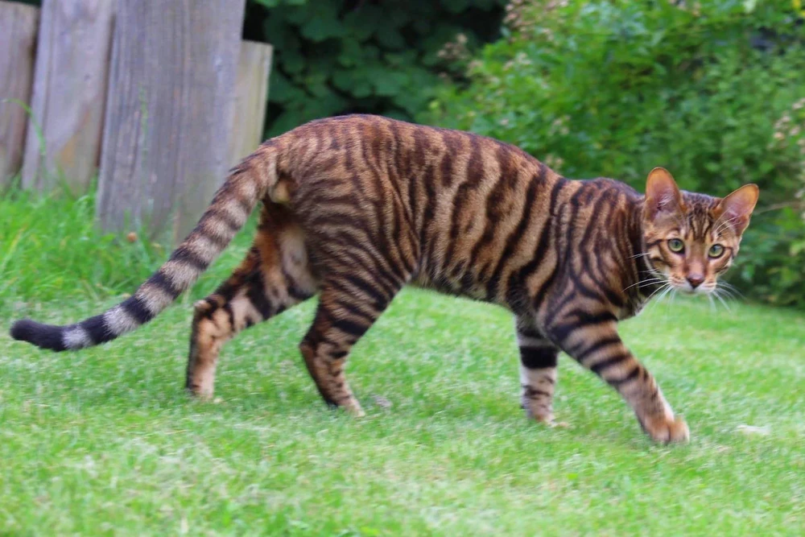

Gato Tigre Ilusório

Ficha Técnica:
Nome: Gato Tigre Ilusório
Nomes alternativos: O Enganador, Tigre Disfarçado, Gato da Ilusão, Predador Oculto
Raça: Tigre de Bengala
Tipo da raça: Ilusório
Nivel de ameaça: Médio
Características físicas:
- Verdadeira forma: Tigre de Bengala adulto de 250kg
- Forma percebida: Pequeno gato laranja doméstico
- A ilusão afeta todos os observadores simultaneamente
- Câmeras especiais podem revelar sua forma verdadeira
Capacidades:
- Manipulação cognitiva em massa - todos o veem como gato inofensivo
- Força, velocidade e garras de um tigre adulto
- Causa impossibilidade de sentir medo ou agressividade contra ele
- Vítimas não conseguem registrar que estão sendo atacadas
- Instinto predatório refinado de grande felino
Fraquezas:
- Equipamentos especiais não-biológicos podem detectar sua forma real
- Seus ataques deixam evidências físicas inconsistentes com um gato
- Indivíduos com certas condições neurológicas podem resistir à ilusão
Como contê-lo:
CONTENÇÃO IMPOSSÍVEL: Você não conseguirá atacá-lo. Seu cérebro não permitirá que você machuque algo tão fofo. Se você encontrar um gato laranja em áreas não autorizadas, corra. Não olhe para trás. Não tente fazer carinho. Sua mente vai te convencer que é seguro. Não é.
Relato do Dr. Valentim:
Dr. Valentim é um dos poucos sobreviventes de um encontro com o Gato Tigre. Ele possui uma rara condição que o torna parcialmente imune à ilusão.
"Eu via as duas coisas ao mesmo tempo. Um gatinho laranja adorável e, por trás, a silhueta de um tigre imenso. Meus colegas só viam o gato. Eles queriam pegá-lo no colo. Eu gritava para eles correrem, mas eles riam de mim. 'É só um gatinho', diziam. Quando o tigre atacou, eles ainda estavam sorrindo. Mesmo enquanto eram despedaçados, seus cérebros se recusavam a entender o que estava acontecendo. Eu fugi. É a única razão de estar vivo. Até hoje tenho pesadelos com aqueles sorrisos."
Variações:
Existem rumores de outros grandes felinos com capacidades ilusórias semelhantes.
História:
A história do Gato Tigre Ilusório ainda está sendo documentada.